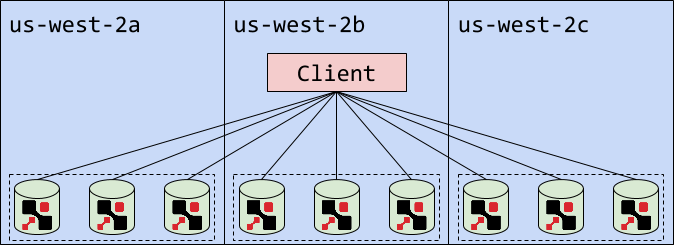

Hello World
CodeTengu Weekly 碼天狗週刊
CodeTengu Weekly 會在 GMT+8 時區的每個禮拜一早上 10:00 出刊，每一期會從目前的 curator 名單中選出三位來負責當期的內容，每一位 curator 各自負責不同的領域，如果你在這一期沒有看到自已感興趣的東西，說不定下一期就會有了。你也可以瀏覽一下前幾期的內容，有價值的東西是不會過時的。
以下是目前的 curator 陣容：
- @vinta - I failed the Turing Test - 科幻迷，最近在讀「家畜人鴉俘」
- @saiday - Imnotyourson - 我的變態是演化的一部份，請妳放尊重一點
- @tzangms - Oceanic / 人生海海 - 衝動型購物
- @fukuball - ImFukuball - 最近好窮，有案子可以接嗎？
- @wancw - 五月病發作中
- @mingderwang
- @kako0507 - 熱愛嘗試新事物的前端工程師
- @chiahsien - Nelson
- @hiroshiyui - 非典型司書
- @uranusjr - Smaller Things - 聽說這是技術週刊，可是我不愛談技術怎麼辦
- @kkdai - 態度萬歲 - 喜歡 Golang 的略懂工程師
大家也可以關注 CodeTengu 的 Facebook、Twitter、GitHub 或微博，有很多 Weekly 看不到的內容。有任何建議或疑問也可以來 Gitter 聊聊，歡迎亂入 👺
 @saiday
@saiday
The New 10-Year Vesting Schedule
新創公司的其中一個特色就是會給比較低的實質薪水，用其他的方式來補償員工，股票選擇權是常見的方式之一。
這篇文說的是新創圈的創辦人跟 VC 是怎樣技術性地操作股票選擇權，讓他們獲得最大利益，當然犧牲的就是持有選擇權的員工了。
先有四年期的股票選擇權，兩年後告訴你當初給的股票太少，提高之後再重新來一輪四年期。
更不要說這些創辦人跟 VC 都不希望公司太早上市，這讓員工沒辦法把股票換成現金啊。
大家可以參考看看，雖然說台灣的情況比較特別，因為我們還會有這樣的工作型態需要去思考 全職工作 薪水自備 可簽約定股權，唉。
註：這一季的 SILICON VALLEY 美劇也剛好都在演那些 CEO 跟 VC 們都是怎麼在看待軟體公司的，真的好壞喔。
Reflections on six months of Swift
Khanlou 是一個我很喜歡的 iOS 開發者，最近寫了一篇關於 Swift 的文章，跟大家分享為什麼開始寫 Swift 跟為什麼不寫 Swift。
Steve Yegge 說軟體工程師跟所有的立場一樣，有分成保守派跟自由派，關於自由派讚揚 Swift 的言論已經看過很多了，Khanlou 在我心中是一個典型保守派的代表，他專注的領域偏向效能、架構、pattern、best practice，這樣的人來評價 Swift 值得參考。
I still think the prudent choice is to continue writing apps in Objective-C.
繼續使用 Objective-C 開發，這是他寫了六個月 Swift 的心得。
只不過前提是在 Swift 做到可以版本向下相容之前，當 Swift ABI compatibility 的那一天他就會義無反顧地使用 Swift 了。
他的理由也很務實，如果是一個長期的 project，在做 Swift 版本升級的期間你可能得維護兩份 swift-2、 swift-3 之類的 branch、升級也會受制於你的 dependencies，好不容易升級完了，想要 trace 一個 bug 你用 git bisect 或是手動 checkout 回去，連 compile 都無法，這樣不優啊。
[Swift] Pattern Matching
Swift 被稱讚的彈性很大部分來自於 case 這個關鍵字可以很靈活，而這個 case 就是 Swift 對 pattern matching 的實作。這篇對 pattern matching 說明得很詳細，如果你對這個詞還不太有把握的話，那麼看完你就明白了。
當然也介紹了大量的 enum, switch, case 用法。
註： Swift 的 pattern matching 不像純正的函數式語言可以在 function declaration 實作 pattern matching，全部都是透過 case 關鍵字實作的。
ConstraintLayout 101 & the new Layout Builder in Android Studio - Riggaroo
這次 Google I/O Android 的部分讓我感興趣的除了 Instant Apps 之外就是 ConstraintLayout 了。
以往的 Layout 功能相較之下比較單純，一個 Layout 不容易處理太複雜的視覺，所以 Layout 嵌套的狀況很常見，這樣除了增加開發 XML 的複雜度之外也影響了效能。
這次新引入的 ConstraintLayout 就是想要解決這些問題，甚至還在 Android Studio 提供了更強大的編輯方式，看起來簡直就是另一種 layout design 的方式，難怪在 Google I/O 的標題叫做 Android Layouts: a new world。
想要直接感受一下的話，可以參考另一個 GitHub repo hitherejoe/Constraints
@hiroshiyui
Erlang 執行速度好慢好慢嗎？
一個很經典有趣的例子，計算、列舉畢氏定理的可能值，以我彆腳的數學程度也只能想出原始的版本，覺得能夠想出改良版本的人真的很厲害。但我想不僅是 Erlang、函式語言如此，很多語言用了更巧妙、或者說更貼近電腦計算方式的演算法，效能表現就會有顯著的差異。
Elixir-koans by elixirkoans
之前提過 Elixir School 這個 Elixir 學習資源，這次要介紹的是 Elixir-koans，透過 TDD 的方式帶您學習 Elixir，類似的資源有 Python 的 Python Koans、Ruby 的 Ruby Koans、Clojure 的 Clojure Koans… 等。學程式語言順便學 Test-driven Development，一兼二顧，摸蜊仔兼洗褲，真的很推薦。
我是很崇尚「測試先行」這件事的，測試不是萬能，但是缺少測試，您的產品 QA 就是無法給人（無論這人是他人還是您自己）一個保證。
同場加映：重談「佛祖流」敏捷軟體開發
Static Markdown blog posts with Elixir Phoenix
這篇教您用 Phoenix 做出類似 Jekyll 的靜態網誌，有使用 GitHub Pages 的人應該對 Jekyll 這個產品不陌生。
 @uranusjr
@uranusjr
My time with Rails is up
長期在 Ruby 社群活躍的 Piotr Solnica 宣布自己受夠 Rails 了，決定以後再也不在自己的 Ruby 專案中支援它。他舉出了一些原因：
- Merb 與 DataMapper 的消亡，使得 Rails 缺少競爭
- Rails 過於擁腫且複雜
- 高度耦合，無法單獨使用任何元件，同時使得測試困難
- 無法很好的與任意 Ruby 專案共存
他同時也講了很多使用 Rails 的心路歷程（以及 Rails 的許多優點）。如果你也有用 Rails，應該會感到共鳴；如果你想考慮學習 Rails，也很值得看看。
我個人主要還是用 Python，和 Ruby 只是偶爾玩玩（很久沒碰 Rails 了），所以看到這類文章第一個直覺就是把其他社群與 Python 比較。感覺每個社群都有一些很獨特的地方，不知道是否因為語言和主流函式庫會吸引相同性質的人，還是一開始在同一社群裡的人會更容易接納同類。像 JavaScript 尤其 Node 的社群感覺就是混亂（不是貶義，是 D&D 屬性的那個意思，相對於守序）。
另一方面 Ruby 給我的的感覺就是集中。例如 Matz 本人和 DDH 等等，有很多「他說了就算」的狀況。當然集中有集中的方便——尤其是效率——但在某些時候就會有這次的問題，因為領導人的鮮明人格特質，以及大家的附和，而排擠了不同聲音。原文發出後隔天，就有人發出了一篇⋯⋯或許可以說是反擊？DDH 本人也有一些意見，更進一步讓人感受 Rails 對於集中的擁護，以及他們依據這個偏好做出選擇的各種理由。當然這不是出於惡意，只是社群的特點，喜不喜歡就看個人了。我還是比較偏守序、中立、分散的風格，所以就繼續留在 Python 社群囉。
I hate the term “open source”
作者認為「開源」這個詞已經無法反映大家在做的事情。字面上來看，開源就是，呃，讓大家看得到/可以用你的源碼，但其實當我們說開源社群的時候，指的並不只是這件事，而隱含一個更重要的性質：這個軟體是由大家共同完成，且任何人都可以加入。或許公共軟體會是個好詞？
Seldomly Used SQL: bool Aggregate Functions
SQL 中有一類特殊的運算函式叫 aggregation，可以把很多的結果合併成一個，例如 sum、avg 等等。這篇文章舉出兩個大家比較少用到的函式：bool_and 與 bool_or，用來對所有資料做 and 或 or，類似 Python 的 all 與 any，並舉出一些好用的範例。
The surprising cleverness of modern compilers
#include <stdint.h>
int count(uint64_t x) {
int v = 0;
while(x != 0) {
x &= x - 1;
v++;
}
return v;
}
你絕對猜不到 Clang 對這個函式的編譯結果！（內容農場口吻）
本文是一個 C 編譯器有多麽變態（良い意味で）的例子。事實上這個寫法在 LLVM 被視為一個特例來優化，所以如果你用錯算法，效率會莫名得差非常多。
這讓我想到 Guido 說過 Python 的 compiler 做得很笨，但反而很有用。你基本上可以把程式源碼直接對應到 Python compiler 吐出來的 op codes，也因此更容易從判斷一段源碼執行的效率，不會有神奇的非預期效果。
相對的，因為 C 實在太 bare-metal，編譯器為了補救標準庫沒有的東西，就必須對你的程式做出各種奇奇怪怪的事情。如果 C 函式庫包含一個 size_t bcount(uint64_t x, bool positive)，不就沒這個問題了嗎？有特殊 CPU 指令的平台可以使用該有的實作，其他平台也可以使用最有效率的演算法，使用者負責使用就好；若不知道這個內建函式，而寫出不好的程式，那是使用者自己的問題。真希望活在這樣完美的世界啊。
 @kkdai
@kkdai

The Netflix Tech Blog: Application data caching using SSDs
Netflix 最新的技術部落格文章：
Netflix 的技術部落格，一直都是相當值得挖寶的地方．如同 Google 一樣， Netflix 不斷的在建立自己的系統． 本篇文章提到有一個 Golang 寫的 application data cache proxy
Rend
透過 Rend 決定資料要存放 memcached 或是 SSD，同時他們也把 Rend 開源出來． Rend Github
ANT 提出一個很好的思考題: 為何 Netflix EVCache 用 Memcached 而不是 Redis
Dropbox's Magic Pocket with James Cowling - Software Engineering Daily
分享一個最近聽到的 podcast:
幾個月前 Dropbox 離開 Amazon S3 離開到自己建立的 Magic Pocket 硬體架構，被稱為是史詩般的故事． Dropbox storage lead James Cowling 來談談當初的轉換過程．不少有趣的架構討論與經驗談(包含測試)． 會放在這裡是因為在 (32:55) 開始會討論到使用 Go 與 Rust 在的選擇上．
大家都知道 Dropbox 本身是使用 Python 起家的，但是他們喜歡 Go 的 Concurrency 跟 Strong type system ，架構語言選擇上:
- 整體架構使用 Golang 控管整個流程．
- 商業部份的邏輯仍舊使用原來的 Python
- 硬體相關與記憶體相關操作使用 Rust ，因為 Rust 在記憶體部分比較有彈性也容易控制 Low-level API ．
有考慮使用 Go 與 Rust 的人可以聽聽那一段．